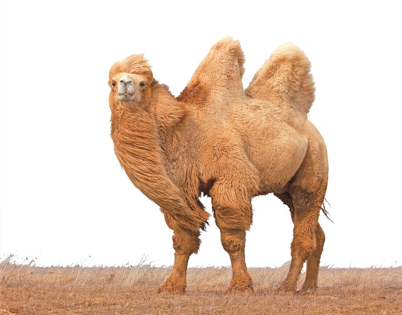
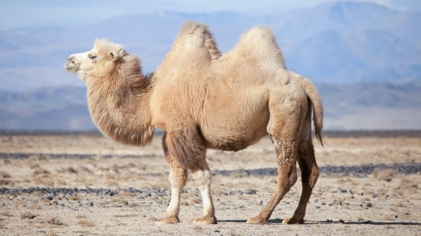
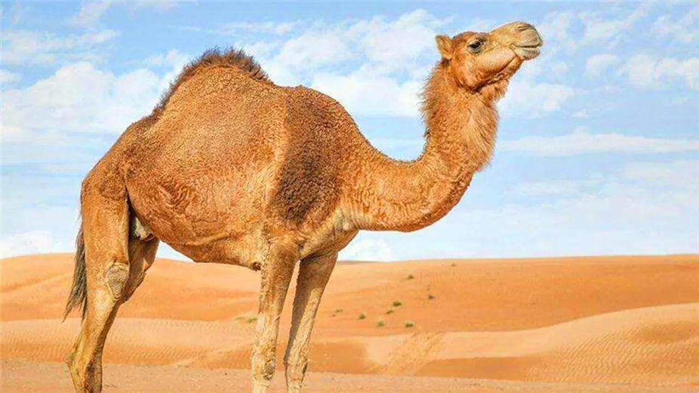
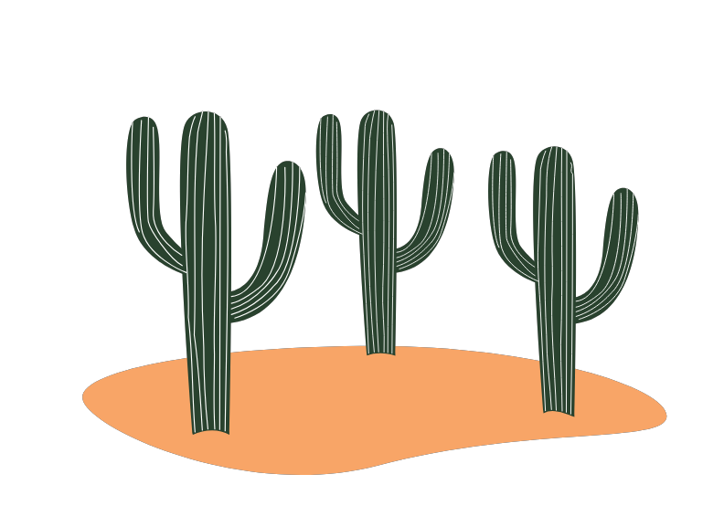
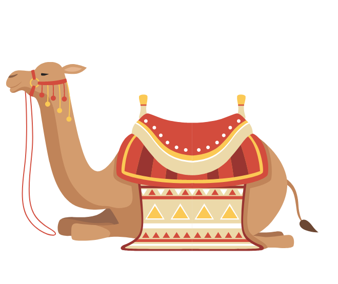
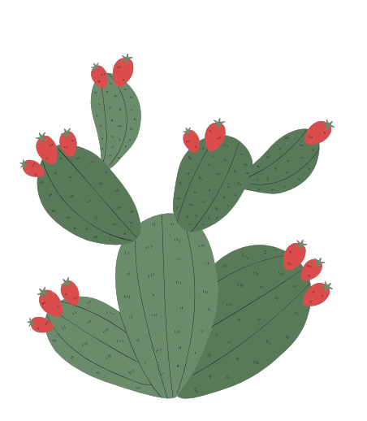

駱駝 Camel

駱駝

駱駝

駱駝
Previous
Next

性格：
駱駝被認為是一種相對冷靜和沉著的動物，具
有獨特的性格特徵。它們通常表現出沉著冷靜
的態度，能夠忍受長時間的旅行和艱苦的環境
。駱駝在面對困難和壓力時表現出耐心和堅韌
的特質，能夠在沙漠中找到食物和水源。駱駝
被認為是相對友善和溫和的動物，與人類和其
他駱駝之間建立起密切的關係。它們具有良好
的適應能力，能夠與人合作，並在農業、運輸
和旅行等方面提供重要的幫助。然而，駱駝也
可以表現出頑固的一面。當它們不想做某件事
情時，可能會堅持自己的想法，並不容易被說
服或控制。這種頑固的特質在某種程度上反映
了駱駝作為生存者和自主動物的本性。總體而
言，駱駝的性格特徵包括冷靜、沉著、耐心、
堅韌、友善以及某種程度的頑固。這些特質使
其成為一種獨特而有價值的動物，能夠在艱苦
的環境中生存並與人類建立緊密的聯繫。
食物：
駱駝是一種生活在乾燥沙漠和草原地區的動物
，它們擁有獨特的食物需求。駱駝主要以植物
為食，尤其是草、葉子、樹枝和各種草本植物
。由於駱駝生活在極端的環境下，食物稀缺且
水資源有限，它們發展出了對於乾燥植物的適
應能力。駱駝的消化系統非常特殊，它們能夠
有效地提取養分並存儲水分。駱駝的胃部分為
三個部位，其中最大的胃袋可以容納大量食物
。當駱駝進食時，食物經過口部咀嚼後，進入
胃部進行初步消化。然後，駱駝會逐漸將消化
過的食物傳送到其他胃部，進一步分解和吸收
養分。此外，駱駝還有一項獨特的適應能力，
就是能夠在缺水情況下繼續生存。當沒有足夠
的水源供應時，駱駝會利用體內儲存的脂肪和
水分進行代謝，並通過减少尿液和汗水的排出
來節約水資源。這使得駱駝能夠在長時間缺水
的情況下生存，甚至能夠承受高溫環境。總結
來說，駱駝的食物主要包括各種草、葉子、樹
枝和草本植物。它們通過特殊的消化系統和節
水適應能力，能夠在乾燥和缺水的環境下生存
和繁衍。

外表特徵＆外觀：
駱駝是一種大型哺乳動物，具有獨特的外表特
徵和外觀。它們有著長而彎曲的脖子和腿部，
身體覆蓋著厚厚的毛皮，適應著乾燥和炎熱的
沙漠環境。駱駝的毛色通常是棕色或灰色，有
助於它們在沙漠中進行有效的保護色彩。駱駝
有著特別的身體結構，包括長長的脖子和大而
凸起的背部峰。這些峰實際上是脂肪組織的儲
存庫，能夠提供駱駝在乾燥的環境中長時間存
儲水分和營養。駱駝的腳底下有寬大的足底，
能夠在沙漠中行走，同時還可以適應不穩定的
沙質地形。駱駝的頭部有著大而圓的眼睛和長
長的睫毛，可以保護眼睛免受沙塵的侵擾。它
們的嘴巴有著堅固的牙齒，可以咀嚼堅硬和粗
糙的植物，而無需大量的水分。總體而言，駱
駝的外表特徵和外觀使其能夠適應乾燥和炎熱
的沙漠環境。它們的長脖子和腿部、厚重的毛
皮、背部峰和寬大的足底都是為了在這樣的環
境中生存和移動。駱駝是沙漠中的寶貴資源，
對於當地居民的生活和經濟至關重要。
分佈＆數量：
駱駝主要分布在非洲北部、中東地區和亞洲的
草原和沙漠地區。非洲北部的撒哈拉沙漠、撒
赫勒沙漠和紅海沿岸是駱駝最常見的地區。此
外，中東地區如阿拉伯半島和伊朗的沙漠地區
也有駱駝的分布。亞洲地區，尤其是中國的西
北部和蒙古國的戈壁沙漠也是駱駝的棲息地。
駱駝的數量難以確切估計，因為它們生活在廣
大的沙漠和草原地區，並且往往是野生狀態下
。然而，根據世界自然保護聯盟（IUCN）的資
料，駱駝被歸類為一個受到關注的物種。其中
，非洲駱駝（一峰駱駝）的數量相對較多，但
仍然面臨一些威脅，如過度放牧和棲息地喪失
。相比之下，亞洲駱駝（雙峰駱駝）的數量相
對較少，被列為瀕危物種，主要受到狩獵和棲
息地破壞的影響。總體而言，駱駝在其自然棲
息地中的數量在一些地區可能面臨減少的風險
，因此保護這些物種的生存環境和實施有效的
保育措施至關重要。
生活型態＆習性：
駱駝是以群體為基礎的社會性動物，它們具有
特殊的生活型態和習性。駱駝通常以小型至中
型的群體形式生活，由一頭雄性領導。這種群
體結構有助於提供相互保護和合作取食。駱駝
具有適應沙漠和草原環境的習性。它們的長腿
和寬大的蹄子使得它們能夠在沙漠中行走，並
減少對沙地的壓力。駱駝還有耐乾燥的能力，
它們可以長時間忍受缺水，並從食物中獲得所
需的水分。駱駝是擅長適應極端氣候的動物，
可以承受高溫和低溫的極端環境。它們有著厚
重的皮膚和長毛，能夠保護自己免受極端天氣
條件的傷害。此外，駱駝的大眼睛和長而彎曲
的睫毛有助於保護它們的眼睛免受風沙的刺激
。在取食方面，駱駝是草食性動物，以草、葉
子、樹枝和各種草本植物為食。它們具有強大
的咀嚼能力和特殊的消化系統，能夠有效地提
取養分並儲存水分。總體而言，駱駝的生活型
態和習性使其能夠在極端的環境中生存和繁衍
。它們的社會性和適應能力使其成為沙漠和草
原地區不可或缺的物種之一。

壽命： 駱駝的壽命通常在25至40歲之間。